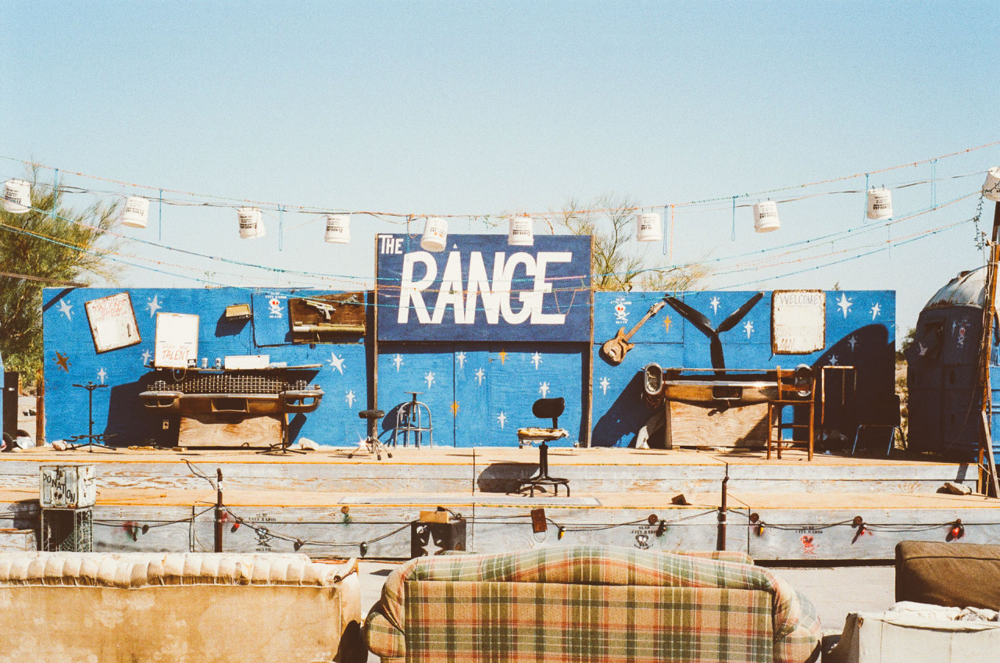

Калифорния вытянута вдоль берега Тихого океана между 32 и 42 градусами северной широты и 114 и 124 западной долготы. Она граничит со штатом Орегон на севере, штатами Невада и Аризона на востоке; южная граница штата также является частью государственной границы с Мексикой. С мексиканской стороны к ней примыкает штат Северная Нижняя Калифорния. Длина Калифорнии с севера на юг — около 1240 км, ширина с запада на восток — около 400 км. Калифорния — крупнейший тихоокеанский штат. Она также является третьим по площади штатом США (423 970 км²), уступая только Аляске и Техасу и опережая Монтану.
 Назад на главную